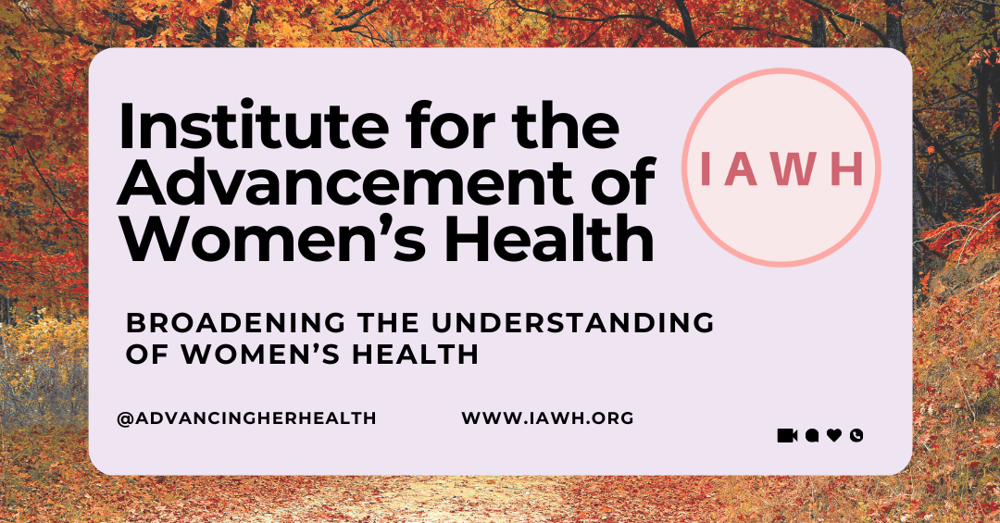
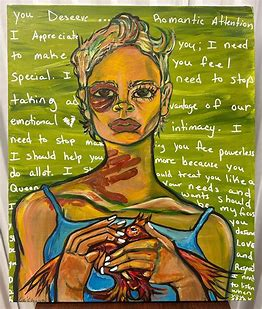

Shame is often associated with domestic violence/intimate partner violence. No one wants to admit to the failure of judgement of another person’s character – someone that we have allowed to enter the most intimate and personal spaces in our lives. No one wants to deal with the fact that others around us can possibly see things in people that we cannot see – they’re jealous, they’re out to get me, they cannot stand to see me happy and any number of other excuses we offer or defenses we use to hide from the truth … So often, the fear and stigma associated with needing and seeking mental health support keeps us from making the first step. Read Justine’s story during this Domestic Violence Awareness Month.
Justine’s Story
Justine grew up in a single-parent family. Even without a father present she was supported and had a close-knit group of friends since middle school. She was the second in her family to attend college. She had dreams of becoming a financial analyst, working on Wall Street, and eventually marrying and raising a family. However, right after college, when she met her soon-to-be partner, Alex, her life took a dark turn that took her off of the path she had planned for her life.
At first, Alex was charming and attentive, making Justine feel special and loved. However, as time went on, Alex's true nature began to surface. In public and around Justine’s friends and family, he would be the perfect boyfriend, offering to do things in the yard, change the batteries in the smoke detectors, and bring in firewood from the shed for her mom. He kept up on the political and social chit chat with her sisters and her girlfriends and made grand public gestures to show everyone how much he wanted to be with Justine. But in private, the intimate partner violence started with small incidents— heated, disrespectful, and aggressive words at first, that soon escalated into pushing, shoving, and grabbing. Over time, rude words intensified into more severe acts of violence, leaving Justine with an occasional bruise here and scars there that she tried to play off or hide from her friends and family. This would be followed by fervent apologies, flower deliveries to her job, and fancy dinners out.
The emotional roller coaster was just as damaging as the physical abuse. Justine would often be the recipient of Alex’s rage - the anger and frustration that he could not express at work with his colleagues or his boss. He would belittle her, repeatedly and routinely scold her to tears as if she were a child, calling her names and making her feel worthless, like she could not do anything right. He controlled every aspect of her life, from what she wore to who she could see and when.
Everybody could see how much this relationship had changed Justine, but there was no getting through to her. She would quickly dismiss anyone who tried to talk to her about taking better care of herself, putting herself first, not giving up on her life goals. Although she tried to hide it, she was enduring the kind of trauma that would leave deep scars. She became moody, she cried a lot, she was jumpy, easily startled by loud noises, and often retreated into herself. She had trouble trusting people, even her long-time friends, and she struggled with anxiety and depression.
Despite all of this, Justine became emotionally dependent on Alex, believing that somehow, he completed her, that they were building a life together, and this is what it took to be in a lasting relationship. She convinced herself that she could not survive without him, after all, she always wanted to marry and have a family, and she was invested in this relationship.
After three years of enduring this abuse and hiding things from her closest friends and losing touch with others, Justine finally gathered courage and believed she had enough knowledge and support to break away from Alex. She had all but given up on her plans to work on Wall Street and neglected to stay in touch with university classmates and colleagues with which she would have climbed the corporate ladder. It hurt to face the truth that Alex was not who she thought he was, he was not who she had projected him to be. He was not who she needed to be with, and she could do better, or as the saying goes, I can do bad all by myself. Justine was grateful that they did not have any children together. With the help of her friends and family, she moved out of the house, where she was living with Alex, and into a safe space. She started to go back to where her life plans derailed and started networking with professional colleagues that she had set aside three years prior.

Justine found support through a number of places. She attempted online therapy. She’d read about it and heard from others that being able to unload very private thoughts and experiences can bring relief and is helpful. This worked for her because it allowed her to receive treatment from the privacy of her home and it was much less formal than office visits. She also participated in group therapies offered by the church, where she was a long-time member, under the supervision of licensed counselors. Of course, she relied on the support of her mother, sisters, and close friends.
If you can relate to Justine’s story or know of someone who this story reminds you of, you can begin the journey to a new pathway forward, learning more starting with the resources below. Share this information with another woman so that she might share it with even another woman.
Resources
• The National Domestic Violence Hotline
Free | 24/7 | ConfidentialCall: 800-799-SAFE (7233) or 800-787-3224 (TTY)Text: "START" to 88788. Hotline Privacy Policy. Message and data rates may apply. Text STOP to opt out.Chat: thehotline.org
· Find a Shelter or Program Near You – Enter your zip code to identify resources near you.
- Battered Women’s Justice Project
- Break the Cycle
- National Network to End Domestic Violence
- National Network to End Violence Against Immigrant Women
- National Online Resource Center on Violence Against Women
- Not Alone: Together Against Sexual Assault, Center for Changing our Campus Culture
- Loveisrespect (National Dating Abuse Helpline)
- National Center on Domestic and Sexual Violence
- National Center on Domestic Violence, Trauma & Mental Health
- National Center for Victims of Crime
- National Clearinghouse on Abuse in Later Life
- The National Coalition Against Domestic Violence
- RAINN (Rape, Abuse & Incest National Network)
This article first appeared on the IAWH Health blog on October 14, 2024 and is preserved here as part of the IAWH Health Journal archive. Information reflects what was known at the time of publication. This article is for general education and is not medical advice.